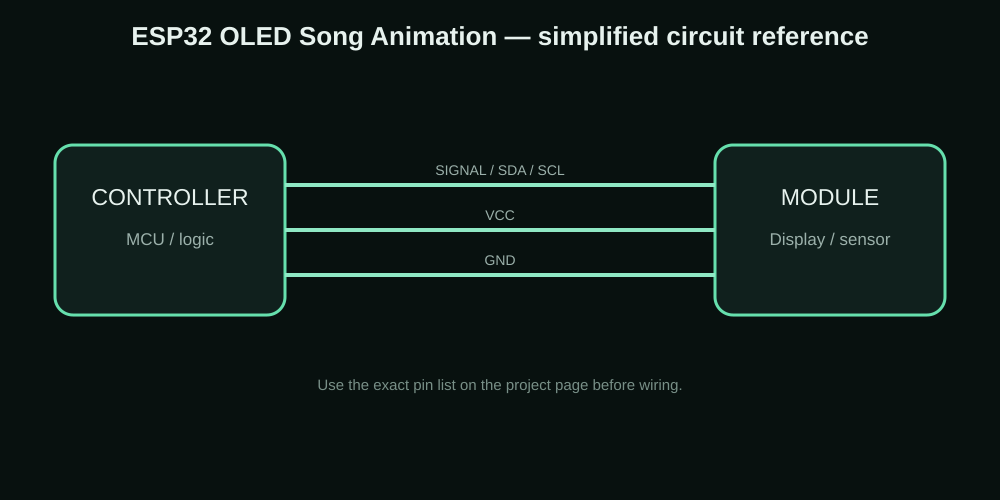

ESP32 + 0.96-inch OLED Song Animation
A compact ESP32 project for playing my own monochrome song and pixel animations on a 0.96-inch 128×64 SSD1306 OLED.


The idea behind the project
I wanted a simple way to show custom song animations on the small OLED displays I use in my DIY projects. Instead of trying to play a video file on the ESP32, I convert the video into monochrome frames and let the ESP32 draw those frames one by one.
Components I used
| Component | Purpose |
|---|---|
| ESP32 | Main controller |
| 0.96-inch SSD1306 128×64 OLED | Animation display |
| Breadboard | Quick prototype wiring |
| Jumper wires | Connections |
| USB cable | Programming and power |
Connections
| Connection | Details |
|---|---|
| OLED VCC | ESP32 3.3V |
| OLED GND | ESP32 GND |
| OLED SDA | ESP32 GPIO 21 |
| OLED SCL | ESP32 GPIO 22 |
| OLED I2C | 0x3C on the tested module |
How I built and tested it
- Prepare a short video with the important artwork inside the 128×64 area.
- Use the GSN Video → animation.h converter and check the OLED preview before downloading.
- Choose FPS, threshold, rotation and invert until the preview looks right.
- Generate the animation header and matching player sketch.
- Wire the OLED to the ESP32 and upload the sketch.
- The ESP32 sends each bitmap frame to the SSD1306 repeatedly to create the animation.
Problems, limits and things to check
The biggest practical limitation is the amount of frame data. A 128×64 monochrome frame is still 1024 bytes, so long videos can become large. I solve that by keeping clips short and controlling the FPS. If the preview is too dark or too light, the threshold needs to be adjusted.
What this project can teach you
- Song and reel animations
- Pixel-art demos
- Small logos and intro screens
- Maker project displays
- Short OLED storytelling scenes
Downloads
The project ZIP keeps the available project resources together. For a new build, check the code, wiring and board pinout before uploading.
Download Project ZIP